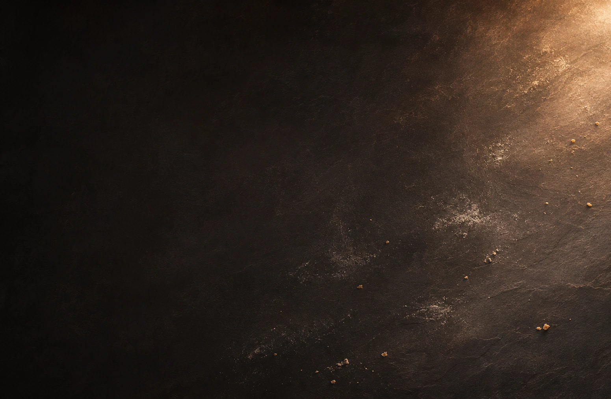

Der gute Teil?Alles.
Echte italienische Klassiker – mit besten Zutaten, viel Leidenschaft und dem vollen Geschmack Italiens.

Echte italienische Klassiker – mit besten Zutaten, viel Leidenschaft und dem vollen Geschmack Italiens.